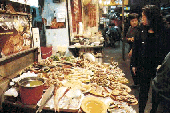
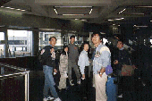
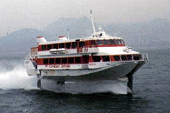
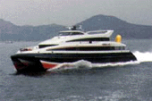
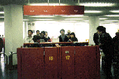
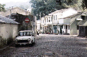

上海街周辺の海鮮が一番安くて美味しかった。シャコとチャーハンが絶品。値段は、小シャコ１皿HK$100-、大シャコ１匹HK$45-位。チャーハンはHK$40だったかな。

それぞれの野望を持って、さあ、マカオに行くぞ。勝ったの誰だ？
それは内緒。

マカオ行きのJET FOIL。マカオ行きのferryでは最も速く最も高い。往復１等でHK$300-位。自分はデザイン的にはCAT
FOILが好き。水中翼船で走っているときはこんなに背が高い。スピードもかなり速い。乗っているとそんなことには全然気がつかない。飛行機みたいにランチボックスの船内サービスがあった。

マカオ行きのCAT FOIL。双胴船である。デザインはバッチグーである。

マカオでの入獄^H^H入国審査。果たして写真を撮って良いのか！？

マカオで見かけた風景。ミニが石畳に似合ってかわいらしい。